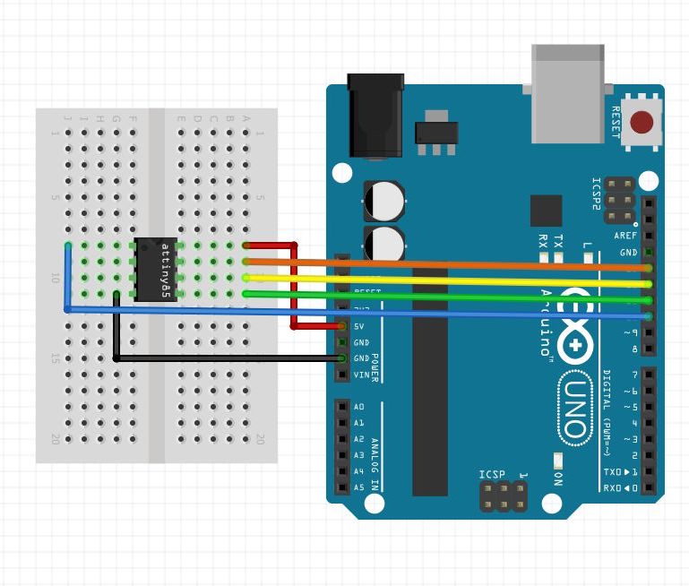

Homemade Hardware
Steps to Making a PCB
Design
-
Prototype
-
Bill of Materials
-
Schematic
-
Layout & Shape
-
Design Copper
Production
-
Cutout & Holes
-
Remove Copper
-
Board Finishing
-
Populate & Reflow
-
Programming
Physical Computing
Design #1
The Physical Computing website is packed with everything you'll need to know about electronics and programming for this class. Specifically, the following pages should be reviewed:
Topics
Labs
Microcontrollers
Design #2
We'll be sticking with Arduino-compatible chipsets in this class so we don't have to leave the Arduino IDE. However, when making your own boards, it helps to have a grasp of what's happenning at lower levels.
Under the hood
-
Sparkfun's explaination of what an Integrated Circuit (IC) is.
-
Arduino's explaination of what happens when you hit Upload.
Arduino Board Manager
-
Here's an overview from Adafruit on using the Board Manager to install third-party boards. This tutorial tells you to download Adafruit's boards, but can be applied to all other boards.
-
Here is a list of all third-party boards supported by Arduino. Simple use the URL's from this page (they end in a .json) and paste them into the Preferences input, as explained in the tutorial above.
-
Install ATtiny85 into your Arduino IDE, using the Board Manager.
Bootload and Code on the ATtiny
-
Turn your Uno into an In-System-Programmer (ISP) that can flash other AVR microcontrollers.
Select Arduino Uno in the IDE
upload the example sketch "File/Examples/ArduinoISP".
-
Go to the menu Tools->Programmer: and select Arduino as ISP (do NOT select "ArduinoISP", that is totally different).
-
Select "ATtiny25/45/85" from Tools->Board
- You need "ATTinyCore" installed, see link above to install if you don't see it in your menu
-
Check that the settings are correct:
- processor = ATtiny85
-
clock = internal 1mhz
- ... or 8mhz or 16mhz are OK. Just make sure it's the same when both "flashing the bootloader" and uploading your code later on.
-
Wire your ATtiny85's SPI and RESET pins to the Arduino Uno's SPI and D10 pins:
 -
Flash the bootloader! This will set the ATtiny85 to the clock speed you selected. Go to Tools->Burn Bootloader (make sure ATtiny85 is the target board, and you have "Arduino as ISP" as your programmer). If you get an ERROR, either:
- you're not powering the ATtiny85 correctly
- you have incorrect wiring or a broken cable
- you don't have "Tools/Programmer/Arduino as ISP" selected as your programmer (not "ArduinoISP")
- you don't have the "File/Examples/ArduinoISP" sketch uploaded to your Arduino Uno
- you don't have the ATtiny85 selected as your target board
- you accidentally broke you ATtiny85 or the Arduino Uno. Try another, and if it still errors, see reasons above.
-
Make something :) Here is a link to ATtiny85 pin description (Arduino pins are labelled blue in the picture), and also other hardware descriptions for connecting to different sensors and outputs.

[FYI] ATmega328p on a Breadboard
-
Arduino's tutorial on bootloading an ATmega328p on a breadboard using an Arduino Uno as the programmer
-
Arduino's tutorial on making a breadboard Arduino, which includes the supporting power, timing, and communications circuitry.
Wireless Modules
Design #2
Below are some wireless modules to use with you DIY boards. They are good choices at this time because they use wireless protocols that are useful to most ITP projects, they are available for low-quantity purchase in the U.S., and they have Arduino support.
RFm69HW - (915 or 433 mHz)
The RFm69 is a simple radio module, great for mesh networking. This means your Arduino projects can communicated directly to each other in any configuration (one-one, one-many, many-one).
-
Pros:
- Mesh networking made simple
- Connects to ATmega328, so you can run your normal Arduino Uno code
- Low power options to save battery life
-
Cons:
- More parts needed, because it requires ATmega328 or similar IC
- Cannot directly connect with phones and other computers
- Long antenna, which you have to cut yourself from a wire
- Source:
- Documentation:
{kind=link}
esp8266
The esp8266 is a very cheap WiFi IC that can also run Arduino code, and it comes in several breakout boards, modules, and prototyping boards.
-
Pros:
- Very low cost
- Runs Arduino code, and uses the Arduino WiFi library
-
Cons:
- Only 1 analogRead pin, and all pins use software PWM
- Source:
- Documentation:
esp32
The esp32 and new update over the esp8266. Like the older one, it can do WiFi, and can advertise over BLE. However it's much newer, so as of now (Spring '18) it doesn't have all Arduino functions, like analogWrite for example.
-
Pros:
- Low cost
- Runs Arduino code, and uses the Arduino WiFi library
- Can advertise as a BLE peripheral (no GATT support yet)
- Has WAY more pins than the esp8266, inluding capacitive-touch inputs
-
Cons:
- Firmware (Arduino support) is not fully implemented because it's so new
- Source:
- Documentation:
RFduino
The nRF51 is can run Arduino code, and communicate over Bluetooth Low Energy (BLE). It also comes in many modules and breakouts, but is most available to us in New York as the RFduino module.
-
Pros:
- Has BLE GATT/GAP support
- Hardware PWM and analogRead on all pins
- Runs Arduino code and BLE stack on same chip
-
Cons:
- The RFduino is on the expensive end for modules
- Source:
- Documentation:
nRF52
The nRF52 is the newer BLE IC from nordic (older version is nRF51). The module we use (from Raytac/Seeed) is smaller so it's harder to solder, but the IC is a great improvement over the older nRF51.
-
Pros:
- Same pros as nRF51 listed above ^^^
- The module is new, but there is much better Arduino support and more to come!
-
Cons:
- Harder to solder down that other module because the pins are small
- Requires a J-Link in order to flash the bootloader
- Source:
- Documentation:
Eagle Schematic
Design #3
Here's a thorough list of Eagle Commands from MIT's course on Eagle.
Adding Parts
The Adafruit Eagle library and the Sparkfun Eagle libraries have a ton of parts for you to use.
Here is a very helpful search tool created by Dangerous Prototypes. You enter a part number you need, and it searches GitHub for any Eagle files that contain that part, so you can simply copy/paste into your design.
Making a Schematic
Sparkfun tutorial on Eagle's schematic view.
Video from Class #2:
Eagle Board View
Design #4
A simple list of the Eagle commands, for quick reference.
Turning a Schematic in to a Board View
Sparkfun tutorial on Eagle's board view, stop when you get to "Routing the Board".
Eagle Routing
Design #5
A simple list of the Eagle commands, for quick reference.
Drawing Routes
Start at "Routing the Board" in the Sparkfun tutorial on Eagle's board view, stop when you get to "Generating Gerbers".
Using the OtherMill
Production #1
- Maintenance and making sure ITP's mills don't break
- Hello World: milling a simple PCB
1 - Load design and bits
Drag and drop your Eagle .brd file into Otherplan, and your design will appear in 3d model and as a new entry on the right side. Add all the bits you will be using for this board (aka 1/32", 1/16")
2 - Inspect and adjust Eagle file
With the correct bits selected, carefully look over your design and check to see if any traces are too close, or any holes are too small they won't be drilled. (link to Bantam Tool's Design Considerations)
To fix any problems, keep Otherplan open, and also open the Eagle file to edit. Adjust your traces, or drop new holes, and press SAVE in Eagle. You can then press the refresh key on your file in Otherplan, and the changes will appear.
3 - Connect to Othermill
Once your file is ready to be milled, you can start using the machine.
Power the Othermill on, and connect to your laptop over the USB cable. Otherplan should now say that you are connected to a mill, and can control it.
4 - Optional: Attach Bracket and Locate
This is only needed if you are doing a double-sided PCB. Read Bantam Tool's guide for how to probe the bracket.
5 - Prepare copper plate
The Othermill is designed to hold plates 5"x4". If your board is larger than this, you can cut it to size in the shop.
Apply double-sided tape to the bottom of your board, and press if firmly down onto the Othermill's bed. Press firmly and for about 30 seconds, making sure that the tape fully stuck and flat to the aluminum bed.
6 - Change Tool and Locate
The top-right of Otherplan will show what bit it thinks is currently connected. This might not be a bit your using, or could just be completely wrong, the machine's not that smart.
Select Change Tool, and follow the instructions. You should add the smallest bit your job is using (aka 1/32"), and follow the instructions for locating. The bits must be located every time after they're inserted.
7 - [New Feature] PCB Probe
This is great. If you have the PCB Probing System, then the machine can measure the thickness of your board for you. Read Bantam's guide for how to use it.
Simply though, with the PCB probe touching your copper plate, go to Menu_Bar->BitBreaker->Probe_Material_Thickess.
If your bit doesn't cut through the copper while cutting, it means some spots on your plate are thinner than others. When this happens, cancel your job, and got up to the Material box in the software and open the Size section. Lower the thickness by 0.05-0.1mm, so if mine was 1.52mm before, I'll change it to 1.50 or even 1.47. Press ENTER so the value is saved, then try milling again.
8 - Run Job
Once correct bit is setup, and your material is ok, you can press "Start Cutting!". While the job is running, do not listen to headphones, and do not leave the machine alone.
If your job is using multiple bits, the machine will automatically stop and ask you to change bits. Follow the instructions just like before, and it will continue with the job.
9 - Remove and clean
Once the job is finished, use a vacuum to clean both your board and the entire insides of the Othermill (including those hard-to-reach places in the top).
Scrub your board with a scour pad to remove any roughness and copper hairs, and test all connections with a multimeter
Engraving Bit Isolation Milling
Production #2
Bantam Tool's has the feature of using an 30 degreen engraving bit to millout the a circuits traces. This is an amazing new feature that allows us to mill much much smaller traces and component pads.
Here's a link to their tutorial on using the new feature.
Cleaning a Milled Copper Plate
Production #3
[WARNING] The below video is old, and we now can mill double sided boards on the same plate. However, the same rules apply when cleaning it.
Tutorials on Soldering
Production #4
[WARNING] The below videos are old, and we now can mill double sided boards on the same plate. However, the same rules apply when soldering.
Sparkfun's Tutorials on SMD Soldering
Sparkfun's tutorials are focused on how to solder the parts down, whether using an iron, hot air gun, skillet, or toaster oven.
Programming Jigs
Production #5
- Here's a tutorial on making a "real" programming jig. This is too professional for what we'll be doing in class, but you can imagine how much design goes into just thinking about how something will be programmed.
- Here's an example of someone hot-gluing some wire to program a dead Pro Mini. That's a jig too.
Bootloaders
Production #5
A Bootloader is a small piece of code that we usually need to put on our microcontrollers before we can program them with Arduino. Any board that works with the Arduino IDE has an "Arduino" bootloader inside it, giving it the ability to load code from the Arduino IDE.
Here's an explanation of what the Arduino Bootloader is from Sparkfun.
Whenever code is transfered from a computer to a microcontroller, something must be in the middle acting as a converter. This is a usb-to-serial converter, or a usb-to-spi converter, or something similar. These middle devices are call In-System Programmers (ISP).
Here's a tutorial on using Arduino as an ISP (In System Programmer)
Here's an example of adding a bootloader to an nRF51822, so that we can program it with Arduino. Unlike Atmel chips which use the mkii as an ISP, the nRF5x chips use the J-Link as an ISP.